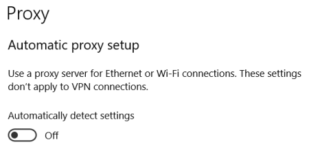

abusing WPAD
Abusing
WPADWhat is WPAD Organizations allow internet access through Proxy Servers.
The Web Proxy Auto-Discovery Protocol (WPAD) is a method used by clients to locate the URL of the wpad.dat
configuration file using DHCP and/or DNS discovery methods. Once detection and download of the configuration file is
complete, it can be executed to determine the proxy for a specified URL.
If “Autodetect Proxy Settings” is
enabled (below the Windows 10 settings):
 Attacker can act as a
Web Proxy Auto-Discovery Protocol (WPAD)
Server(for example using the
Responder utility).
If the attack has success Responder will act as Web Proxy for the victims.
How to defend
against this type of attack• create DNS entry with “WPAD” that points to the corporate proxy
server. So the attacker won’t be able to manipulate the traffic.
• disable “Autodetect Proxy Settings” on all
Windows Systems with Group Policy.
Bibliography:
•
https://www.ivoidwarranties.tech/posts/pentesting-tuts/responder/wpad/•
https://www.trustedsec.com/blog/wpad-man-in-the-middle-clear-text-passwords/